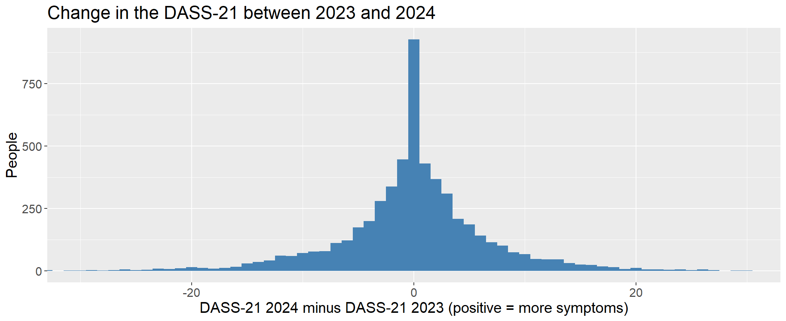
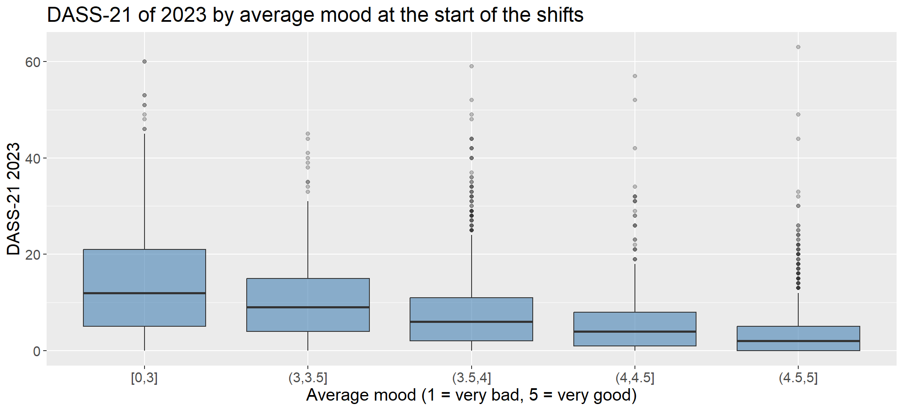
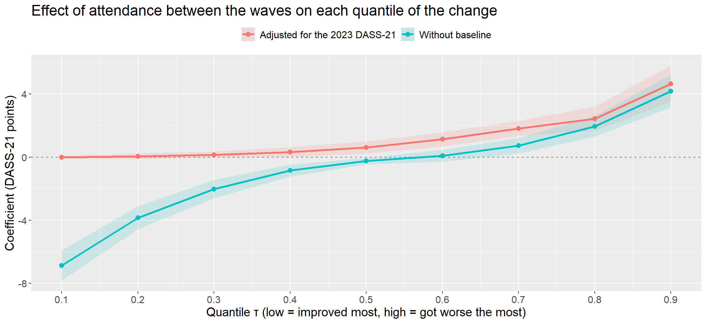

library(data.table)
library(lavaan)
library(quantreg)
library(lmtest)
library(nortest)
library(ggplot2)
library(knitr)
dataset <- fread("data/prf_dass21_caas.csv")
dim(dataset)[1] 10202 52Mental Health in the Federal Highway Police: two waves of the DASS-21 and the role of psychosocial care
Hugo Batista da Silva
Projects 6.1 and 6.2 were made for the same client, a research group in work psychology of the Graduate Program in Psychology of the Federal University of Espírito Santo (UFES), but they use different databases and different analyses. Project 6.1 is a survey of bank workers; this page uses administrative data of the Federal Highway Police (PRF).
The Federal Highway Police (PRF) applies the DASS-21 to its staff as a mental health screening, and it keeps a psychosocial care service, the CAAS, where the staff can be attended by psychologists. The research group received the DASS-21 of 2023 and 2024, the records of the CAAS, the records of the attendance system (where each person reports their mood at the beginning and at the end of each shift) and the results of the physical fitness test (TAF), and asked questions such as:
I was responsible for linking the databases and for the statistical analysis, delivered in a series of reports. This page reproduces the main line of these analyses.
| Construct | Measure | Role in the study |
|---|---|---|
| Mental health | DASS-21: depression, anxiety and stress (the same instrument of Project 6.1) | Outcome, measured twice |
| Psychosocial care | Attendance at the CAAS and number of attendances | Exposure of interest |
| Momentary mood | Mood reported at the start and at the end of each shift (1 = very bad to 5 = very good) | Candidate early indicator |
| Physical fitness | Mean score of the physical fitness test (TAF) | Candidate protective factor |
Two methodological concepts are central in this page. A change score (DASS-21 of 2024 minus DASS-21 of 2023) measures the evolution of each person; positive values mean more symptoms, a worsening. And regression to the mean: people measured at an extreme level in the first wave tend to be closer to the average in the second one, even without any intervention, simply because part of any measurement is random variation.
The databases come from different systems and were linked by the registration number of each person. The number of people in each combination shows how the sample changes with each question:
| Databases | People |
|---|---|
| DASS-21 2023 | 7,864 |
| DASS-21 2024 | 8,164 |
| CAAS (at least one attendance) | 6,013 |
| Attendance system (mood) | 6,656 |
| DASS-21 2023 and 2024 | 5,672 |
| DASS-21 2023 and 2024 + CAAS | 2,619 |
| DASS-21 2023 and 2024 + TAF | 5,693 |
| DASS-21 2023 and 2024 + CAAS + attendance system + TAF | 1,337 |
Each analysis uses the largest possible sample for its question, as agreed with the client, instead of restricting everything to the 1,337 people present in all the databases.
The data are real and protected by the Brazilian data protection law (LGPD). In the version published here all sociodemographic and socio-professional characteristics were removed (sex, age, race, marital status, children, state, unit, position, length of service, management position, loans), as well as dates and free text. The mood, the TAF and the number of CAAS attendances were aggregated per person before the registration number was discarded, and each person received a new random key.
The original reports also included the sociodemographic characteristics as covariates. Since they are not available here, the models of this page focus on the questions about the CAAS, the mood and the TAF.
The DASS-21 totals are calculated from the 21 items in both years (0 to 63), with the same cut-off points of Project 6.1. The CAAS attendance is classified in three groups: no attendance, attendance only before the DASS-21 of 2023, and attendance between the two waves, the group that matters for the change between 2023 and 2024.
itens <- function(ano) paste0(rep(c("Est", "Ans", "Dep"), each = 7), 1:7, "_", ano)
dataset[, dass23 := rowSums(.SD), .SDcols = itens(23)]
dataset[, dass24 := rowSums(.SD), .SDcols = itens(24)]
niveis_caas <- tr(c("No attendance", "Only before 2023", "Between the waves"),
c("Sem atendimento", "Apenas antes de 2023", "Entre as ondas"))
dataset[, caas := factor(fcase(caas_apos_dass23 == 1, niveis_caas[3],
caas_atendido == 1, niveis_caas[2],
caas_atendido == 2, niveis_caas[1]), niveis_caas)]
niveis_dass <- tr(c("Normal", "Mild", "Moderate", "Severe", "Extremely severe"),
c("Normal", "Leve", "Moderado", "Grave", "Extremamente grave"))
classifica <- function(x) factor(findInterval(x, c(17, 21, 26, 30)) + 1, 1:5, niveis_dass, ordered = TRUE)
dataset[, `:=`(classe23 = classifica(dass23), classe24 = classifica(dass24))]
# people who answered the DASS-21 in both years
pareados <- dataset[!is.na(dass23) & !is.na(dass24)]
pareados[, mudanca := dass24 - dass23]
nrow(pareados)[1] 5542Before comparing the two waves, the structure of the DASS-21 is checked in each year with the same confirmatory model of Project 6.1: three first-order factors and a second-order factor, estimated by WLSMV on the ordinal items.
cfa_dass <- function(ano) {
v <- itens(ano)
modelo <- sprintf("estresse_f =~ %s\nansiedade_f =~ %s\ndepressao_f =~ %s\ndass_f =~ estresse_f + ansiedade_f + depressao_f",
paste(v[1:7], collapse = " + "), paste(v[8:14], collapse = " + "), paste(v[15:21], collapse = " + "))
fit <- cfa(modelo, data = dataset[!is.na(get(v[1]))], estimator = "WLSMV", ordered = TRUE)
cargas <- as.data.table(standardizedSolution(fit))[op == "=~" & !rhs %in% lavNames(fit, "lv")]
c(ano = 2000 + ano, n = lavInspect(fit, "nobs"),
round(fitMeasures(fit, c("cfi.scaled", "tli.scaled", "rmsea.scaled", "srmr")), 3),
carga_min = round(min(cargas$est.std), 2),
omega_min = round(min(cargas[, sum(est.std)^2 / (sum(est.std)^2 + sum(1 - est.std^2)), by = lhs]$V1), 3))
}
cfas <- rbind(cfa_dass(23), cfa_dass(24))
kable(cfas)| ano | n | cfi.scaled | tli.scaled | rmsea.scaled | srmr | carga_min | omega_min |
|---|---|---|---|---|---|---|---|
| 2023 | 7863 | 0.981 | 0.979 | 0.047 | 0.032 | 0.68 | 0.935 |
| 2024 | 7881 | 0.979 | 0.976 | 0.048 | 0.033 | 0.70 | 0.932 |
The structure is confirmed in both years, with robust CFI of 0.981 and 0.979, all loadings above 0.68 and omega above 0.932 in every factor. The DASS-21 measures the same three dimensions in the two waves, as it did among the bank workers of Project 6.1, so the scores of 2023 and 2024 can be compared.
media_2023 media_2024 mediana_2023 mediana_2024 mudanca_media desvio_mudanca
<num> <num> <num> <num> <num> <num>
1: 7.564237 7.514255 5 5 -0.04998196 7.657757
Wilcoxon signed rank test with continuity correction
data: pareados$dass24 and pareados$dass23
V = 5370892, p-value = 0.6171
alternative hypothesis: true location shift is not equal to 0transicao <- dcast(pareados[, .N, by = .(classe23, classe24)][, pct := N / sum(N), by = classe23],
classe23 ~ classe24, value.var = "pct", fill = 0)
kable(transicao, digits = 2, caption = tr("Share of each 2023 class (rows) by 2024 class (columns)",
"Proporção de cada classe de 2023 (linhas) por classe de 2024 (colunas)"))| classe23 | Normal | Mild | Moderate | Severe | Extremely severe |
|---|---|---|---|---|---|
| Normal | 0.93 | 0.03 | 0.02 | 0.01 | 0.01 |
| Mild | 0.62 | 0.14 | 0.08 | 0.08 | 0.07 |
| Moderate | 0.56 | 0.16 | 0.12 | 0.10 | 0.07 |
| Severe | 0.45 | 0.17 | 0.14 | 0.06 | 0.19 |
| Extremely severe | 0.34 | 0.15 | 0.14 | 0.12 | 0.26 |
ggplot(pareados, aes(mudanca)) +
geom_histogram(binwidth = 1, fill = "steelblue") +
coord_cartesian(xlim = c(-30, 30)) +
theme(text = element_text(size = 15)) +
labs(title = tr("Change in the DASS-21 between 2023 and 2024", "Mudança do DASS-21 entre 2023 e 2024"),
x = tr("DASS-21 2024 minus DASS-21 2023 (positive = more symptoms)", "DASS-21 2024 menos DASS-21 2023 (positivo = mais sintomas)"),
y = tr("People", "Pessoas"))
On average, nothing changed: the mean change is -0.05 points and the paired Wilcoxon test does not reject the null hypothesis (p = 0.62). But the average hides a lot of movement. The change has a median of zero and a large dispersion (standard deviation of 7.7 points), with people improving and getting worse by more than 20 points. In the transition table, 93% of those who were normal in 2023 remain normal in 2024, while among the 266 people in the severe or extremely severe range in 2023, only 33% remain there in 2024.
This last number is the first sign of regression to the mean: those who are at the extremes in one measurement tend to come back towards the average in the next one.
For each person, the mood reported at the start of the shifts is averaged, as well as the change of mood during the shift (mood at the end minus mood at the start).
[1] -0.4368233
Call:
lm(formula = dass23 ~ humor_entrada + variacao_humor, data = humor)
Residuals:
Min 1Q Median 3Q Max
-20.160 -4.893 -2.084 3.240 59.293
Coefficients:
Estimate Std. Error t value Pr(>|t|)
(Intercept) 24.3604 0.5652 43.101 < 2e-16 ***
humor_entrada -4.2000 0.1427 -29.440 < 2e-16 ***
variacao_humor -2.0786 0.2699 -7.701 1.67e-14 ***
---
Signif. codes: 0 '***' 0.001 '**' 0.01 '*' 0.05 '.' 0.1 ' ' 1
Residual standard error: 8.289 on 4174 degrees of freedom
Multiple R-squared: 0.1723, Adjusted R-squared: 0.1719
F-statistic: 434.5 on 2 and 4174 DF, p-value: < 2.2e-16humor[, faixa_humor := cut(humor_entrada, c(0, 3, 3.5, 4, 4.5, 5), include.lowest = TRUE)]
ggplot(humor, aes(faixa_humor, dass23)) +
geom_boxplot(fill = "steelblue", alpha = 0.6, outlier.alpha = 0.3) +
theme(text = element_text(size = 15)) +
labs(title = tr("DASS-21 of 2023 by average mood at the start of the shifts", "DASS-21 de 2023 pela média do humor no início dos turnos"),
x = tr("Average mood (1 = very bad, 5 = very good)", "Humor médio (1 = péssimo, 5 = ótimo)"), y = "DASS-21 2023")
Yes. A single question answered at the start of each shift has a clear relationship with the DASS-21 (Spearman correlation of -0.44, 4,177 people). Each point of average mood is associated with 4.2 points less in the DASS-21, and people whose mood falls during the shift have more symptoms. The two mood variables explain 17% of the variability of the DASS-21, a lot for a measure that costs a few seconds per shift. The attendance system can work as a continuous signal to identify people who need a closer look between two applications of the DASS-21.
[1] 1378
Spearman's rank correlation rho
data: taf$mudanca and taf$mudanca_taf
S = 425714468, p-value = 0.3766
alternative hypothesis: true rho is not equal to 0
sample estimates:
rho
0.02383724
Spearman's rank correlation rho
data: taf$dass23 and taf$taf_23
S = 449662163, p-value = 0.249
alternative hypothesis: true rho is not equal to 0
sample estimates:
rho
-0.0310748 No. Neither the level of the TAF nor its evolution is related to the DASS-21 in the 1,378 people with the four measurements (correlations close to zero). In this population, physical fitness and mental health evolve independently, and the TAF cannot be used as an indicator of mental suffering.
This is the main question of the client. The first step is to compare the groups before any change:
| caas | pessoas | dass_2023 | dass_2024 | mudanca_media | mudanca_mediana | desvio |
|---|---|---|---|---|---|---|
| No attendance | 2983 | 4.87 | 5.27 | 0.40 | 0 | 4.99 |
| Only before 2023 | 610 | 11.07 | 10.07 | -1.01 | 0 | 9.04 |
| Between the waves | 1949 | 10.59 | 10.15 | -0.44 | 0 | 10.12 |
The groups are very different from the start: those attended between the waves had a DASS-21 of 10.6 in 2023, more than twice the 4.9 of those never attended. This is expected, since the CAAS attends people who need it, but it changes the interpretation of any comparison of change. The attended groups improved on average (-0.44 points), and those not attended got slightly worse (0.4). Read naively, this would be an effect of the CAAS. But people who start higher have more room to fall, and regression to the mean alone produces this pattern.
Estimate Std. Error t value Pr(>|t|)
(Intercept) 0.4009387 0.1399181 2.865524 4.178881e-03
caasOnly before 2023 -1.4074960 0.3395765 -4.144857 3.450996e-05
caasBetween the waves -0.8416775 0.2225766 -3.781518 1.575162e-04 Estimate Std. Error t value Pr(>|t|)
(Intercept) 2.6637916 0.13389381 19.894808 3.998581e-85
caasOnly before 2023 1.4768883 0.30475939 4.846080 1.293595e-06
caasBetween the waves 1.8202637 0.20480998 8.887573 8.314135e-19
dass23 -0.4648822 0.01121801 -41.440722 0.000000e+00 r2_bruto r2_ajustado
0.004500333 0.240134557
studentized Breusch-Pagan test
data: fit_ajustado
BP = 475.68, df = 3, p-value < 2.2e-16
Lilliefors (Kolmogorov-Smirnov) normality test
data: residuals(fit_ajustado)
D = 0.11463, p-value < 2.2e-16Without adjustment, attendance between the waves is associated with 0.84 points of improvement compared with those not attended. When the DASS-21 of 2023 enters the model, the sign is reversed: among people with the same initial level, those attended between the waves have 1.82 points more in 2024. The coefficient of the baseline (-0.46) is the measure of regression to the mean: each point above the average in 2023 is followed by about half a point of “improvement” in 2024, for everyone. The baseline alone takes the R² from 0.5% to 24%.
The residuals are far from normal and heteroscedastic, which was already seen in the original reports. The change of the DASS-21 is a variable with heavy tails, and the effect of the CAAS may not be the same for those who improve and for those who get worse. The appropriate tool for this is the quantile regression.
The quantile regression estimates the effect of each variable on different points of the distribution of the change: the low quantiles (τ = 0.1) are the people who improved most, the median is the typical person and the high quantiles (τ = 0.9) are those who got worse the most. Since the DASS-21 is a discrete score, the change has many ties (17% of the people have exactly zero), which makes the estimates of the quantiles unstable; a small uniform noise between -0.5 and 0.5 is added to the response (jittering, Machado and Santos Silva, 2005) to make it continuous without changing its quantiles in a relevant way.
set.seed(2025)
pareados[, mudanca_j := mudanca + runif(.N, -0.5, 0.5)]
taus <- seq(0.1, 0.9, by = 0.1)
coeficientes <- rbindlist(lapply(c(tr("Without baseline", "Sem linha de base"), tr("Adjusted for the 2023 DASS-21", "Ajustado pelo DASS-21 de 2023")), function(modelo) {
formula <- if (grepl("2023", modelo)) mudanca_j ~ caas + dass23 else mudanca_j ~ caas
rbindlist(lapply(taus, function(t) {
s <- summary(rq(formula, tau = t, data = pareados), se = "nid")$coefficients
linha <- grep("caas", rownames(s))[2]
data.table(modelo = modelo, tau = t, estimativa = s[linha, 1], erro = s[linha, 2])
}))
}))
ggplot(coeficientes, aes(tau, estimativa, colour = modelo, fill = modelo)) +
geom_hline(yintercept = 0, linetype = "dashed", colour = "grey50") +
geom_ribbon(aes(ymin = estimativa - 1.96 * erro, ymax = estimativa + 1.96 * erro), alpha = 0.15, colour = NA) +
geom_line(linewidth = 1.2) + geom_point(size = 2.5) +
scale_x_continuous(breaks = taus) +
theme(text = element_text(size = 15), legend.position = "top") +
labs(title = tr("Effect of attendance between the waves on each quantile of the change",
"Efeito do atendimento entre as ondas em cada quantil da mudança"),
x = tr("Quantile τ (low = improved most, high = got worse the most)", "Quantil τ (baixo = mais melhorou, alto = mais piorou)"),
y = tr("Coefficient (DASS-21 points)", "Coeficiente (pontos do DASS-21)"), colour = NULL, fill = NULL)
Without the baseline, the picture reproduces the heterogeneity found in the reports: attendance appears associated with much more improvement among those who improved most (-6.9 points at τ = 0.1) and with more worsening among those who got worse the most (4.2 at τ = 0.9). This is the signature of a group that simply has a wider distribution of change because it starts at a higher level.
Once the DASS-21 of 2023 is in the model, the “protective” effect in the low quantiles disappears (0 at τ = 0.1), and what remains is a positive coefficient that grows along the distribution (4.6 at τ = 0.9): among people with the same initial level, those attended between the waves are over-represented among those who got worse. The most plausible reading is not that the CAAS makes people worse, but the opposite direction: people look for the CAAS, or are referred to it, when they get worse.
Min. 1st Qu. Median Mean 3rd Qu. Max.
1.000 2.000 2.000 2.859 3.000 53.000
Spearman's rank correlation rho
data: dose$mudanca and dose$qtd_atendimentos
S = 1266879969, p-value = 0.2384
alternative hypothesis: true rho is not equal to 0
sample estimates:
rho
-0.02671833 Among those attended between the waves, the number of attendances (median of 2) is not related to the change either (Spearman correlation of -0.03). Without a dose-response relationship and with a selection this strong, these data cannot measure the effect of the CAAS. To do so, it would be necessary to know the date of each attendance in relation to the two applications of the DASS-21, and to compare attended people with non-attended people with a similar trajectory, for example with a propensity score or with a third wave of the DASS-21.
Together with Project 6.1, the picture is consistent: in both populations mental suffering is high and strongly related to the context of the work, and the statistical care needed to interpret it, validating the measures, adjusting for the baseline, looking beyond the average, is what turns these data into decisions.